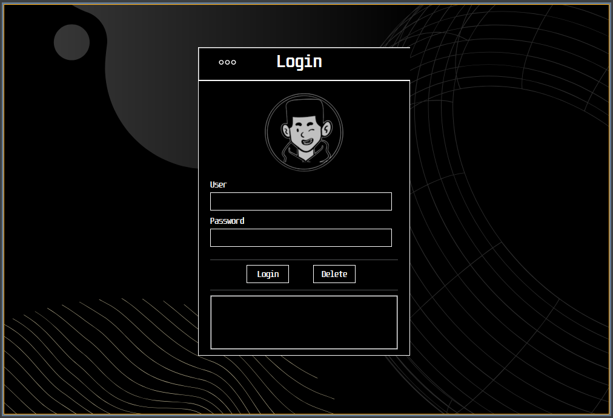

Projects
HEIMDALL
Intelligent surveillance system with AI for Raspberry Pi 5. Real-time pattern detection and intelligent monitoring — "The guardian that never sleeps."
Ai-coding-agent
Autonomous AI coding agent built in Java 21. Analyzes projects, writes and modifies code, runs commands, manages Git, and reasons step-by-step.
Ai-predictor
Pattern Recognition and Prediction System written in Java. Analyzes datasets and applies AI techniques to detect trends and make predictions.
To-Do API
REST API for task management built with Spring Boot 3 and Java 21. Full CRUD operations, clean architecture and production-ready REST endpoints.
PassForge
Full-stack password manager with Java Spring Boot backend and a modern frontend. Secure credential storage with clean architecture.
Roles & Permissions
Role-based access control in Java. Manages users, roles and granular permissions with structured backend architecture.
Clínica Odontológica Sonrisas
Dental clinic management system built in Java. Handles patient records, appointments and clinic data with a structured backend architecture.

Peluqueria Canina
Full CRUD desktop app for a canine grooming salon built in Java with MySQL backend.

Login Validator
Desktop login validation built with Java Swing. Authentication with clean dark UI and credential management.
Java Snippet
A live animated snippet showcasing clean OOP patterns — the kind of code that runs in every project above.
FILECLI
CLI file management tool for Linux — written in Java. Navigate, create, delete and manage files directly from the terminal with a clean command interface.